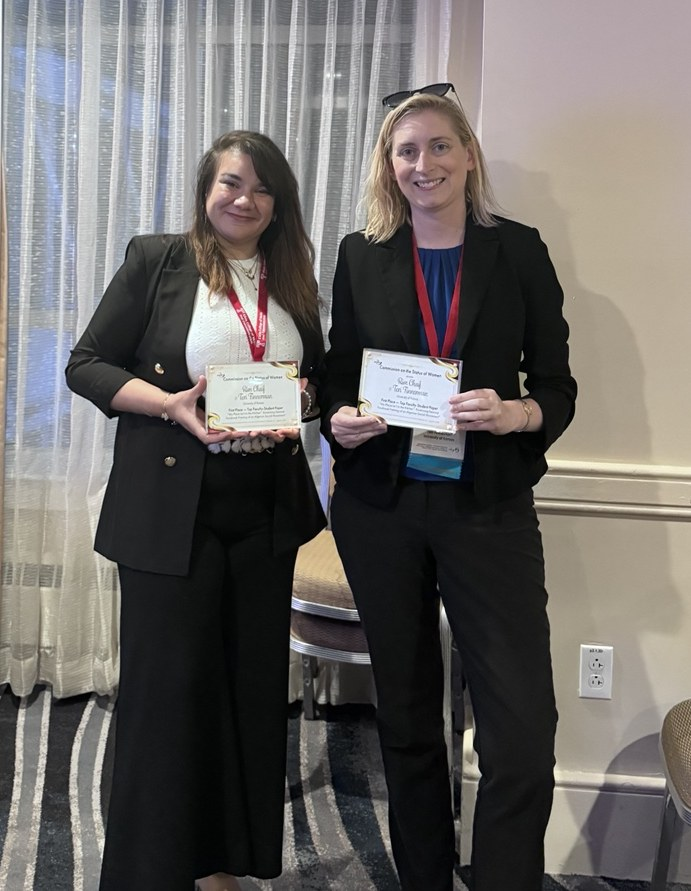

This study examines how feminist activists used Facebook to frame an Algerian social movement, tracing the ways women challenged entrenched gender norms and constructed feminist counter-narratives in a contested online space.
Through close, qualitative analysis of how movement participants told their own stories, the work shows how social media becomes a site for reimagining women’s roles in public life, where framing choices carry real political weight. It centers the voices of the women who lived this moment of social change in the Maghreb.
The paper contributes to scholarship on digital activism, feminist framing, and social movements in the Global South, and reflects a broader commitment in my research to studying representation and identity across cultural contexts.
